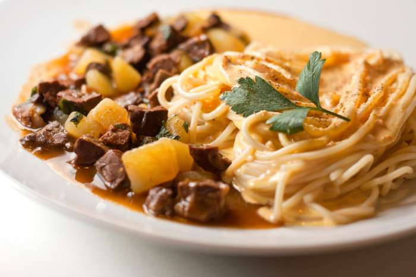

Chanfaina

Chanfaina! oh man, dont take a bad perpective of this, if you come one day to peru you need to prove this!
Ingredients
- ½ kilogram bofe (beef lung)
- 4 yungay potatoes(a peuvian kind of potatoes, use a variant of easy-boiling)
- 1 red onion
- 1 tablespoon minced garlic
- 1 tablespoon chili paste
- 4 peppermint branches
- 3 cups of beef broth
- ¼ oil cup
- Salt
- Pepper
- 1 pinch of cumin
- 1 pinch of oregano
How to make Chanfaina? Steps!
- Prepare and clean the bofe. Then, boil it for 25 minutes in a pot with water along with 2 sprigs of mint and a pinch of salt.
- While the bofe is parboiling or boiling, peel and chop the vegetables for the stew. Cut the potatoes into small cubes of approximately 1cm and place them in a container with water so they do not brown. Also chop the red onion very finely and prepare the rest of the ingredients.
- Once the bofe is cooked, remove it and wait for it to cool down a bit. Next, cut it into small cubes, about the size of a potato.
- Prepare the pot for the chanfainita stew. Heat a splash of oil over medium heat and add the onion and minced garlic.
- When the onion is slightly transparent, add the chili to the dressing.
- Next, add the meat broth, the cubed potatoes, the bofe and the mint. Season with salt, pepper, cumin and oregano to taste. Stir well so that all the ingredients are properly integrated and boil for about 10 minutes, until the potato is cooked.
- It may need a little more cooking, this will depend on the intensity of your fire. When the bofe chanfainita stew has thickened slightly, keeping the juice, it is ready to serve. Profit!
Its common to see the chanfaina with other dishes, like, Ceviche, Red pasta, And Huancaina Sauce. Take a look around in Peru and go for one amazing Chanfaina!